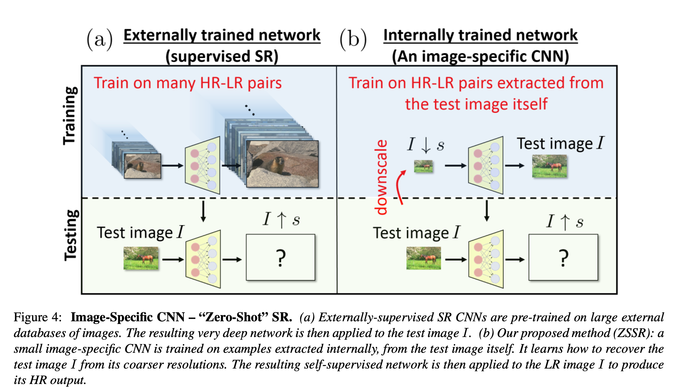

Zero Shot Super Resolution
-
There is no prior training or examples. Internal recurrences of information in the image itself is used for training CNN(internal self-supervision)
-
They claim that the 3x3 or 5x5 like small patches in the image repeat themselves.(internal patch recurrence) Same structures with different scales can be found in the image.
-
For single input image, there are some LR-HR samples generated from itself.

-
Input image $I$ is divided into some patches. $I_{patch}\downarrow s$ is generated. The dataset becomes ${(I_{downscaled}, I_{patch})}$.$I_{patch}$ becomes ground truth and $I_{patch}$ becomes input for the network.
-
Rotation in 4 direction and mirroring in 2 direction are added to enrich dataset by x8.
-
Gradually increased scale factors added to system. $(s_1, s_2, \cdots, s_m = s)$ For each scale factor $s_i$, $(HR_i, LR)$ pair added to dataset.
-
A non-linear downscaling kernel can improve the result.
-
Adding noise to LR samples make network more robust and network learns only correlated informations.
-
It took 54 sec for single image(independent from image size) at single scale factor on a Tesla K80 GPU. If gradually scale factor with 6 intermediate scales is used, it took 5 mins. Final SR image generation is negligible.